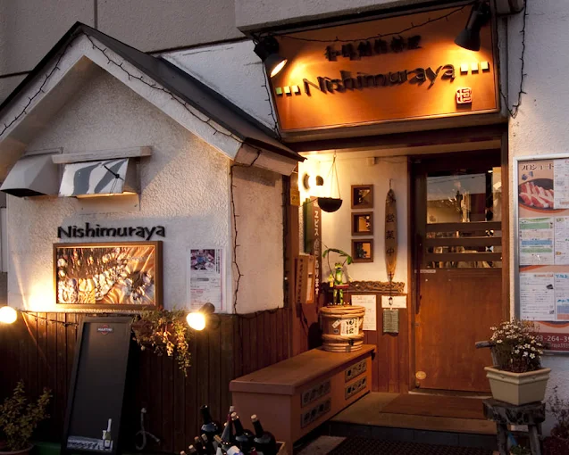

苺とピスタチオのミルフィーユ
サクサクのパイに、軽いカスタードと旬の苺を重ねた人気の一皿。
1,350円
SEASONAL DOLCE COLLECTION
コースの余韻を引き立てる、季節仕立てのドルチェをご用意しています。
フルーツや素材の入荷状況により、内容が変更になる場合があります。
Seasonal Signature

サクサクのパイに、軽いカスタードと旬の苺を重ねた人気の一皿。
1,350円
香り高い柑橘とアーモンド生地を合わせた、季節限定のタルト。
1,280円
Plate Dessert
※ メッセージ付きプレートは前日までのご予約で承ります。
メッセージ・花火付き。お祝い利用に合わせた盛り付けでご提供します。
2,600円
その日のおすすめドルチェを3種盛りにした、シェフおまかせプレート。
2,200円
Classic Dolce
ドルチェに合わせたデザートワイン・食後酒の提案も可能です。
お好みがあればスタッフまでお気軽にお声がけください。